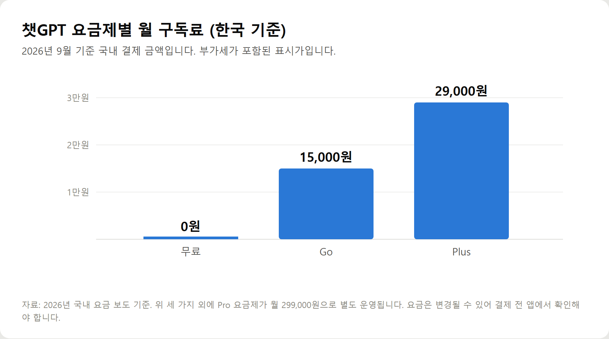
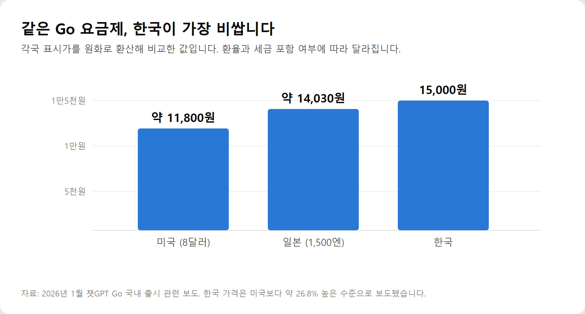
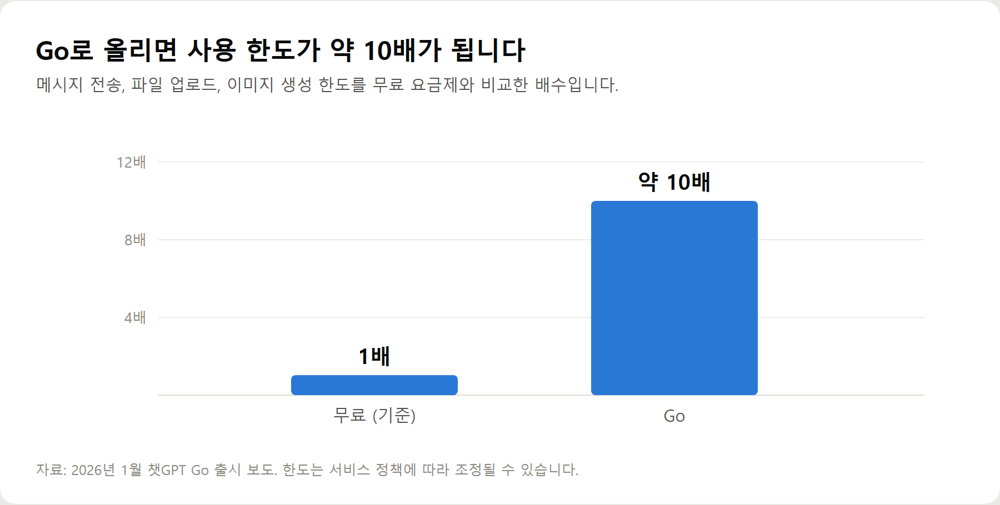
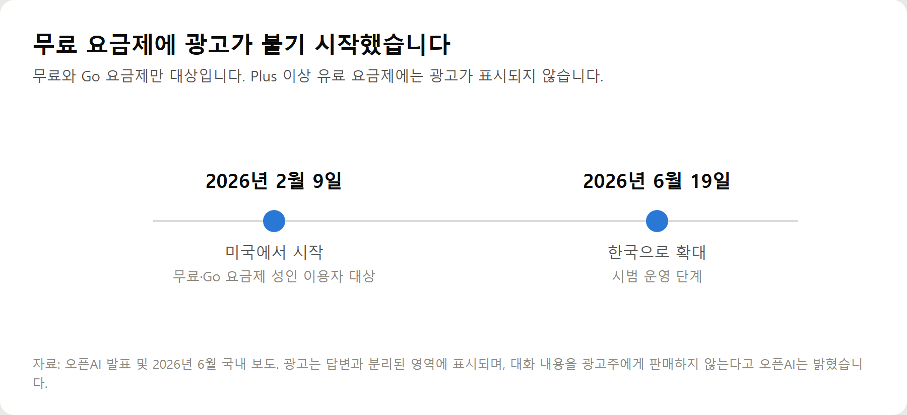

<meta charset="utf-8">
<title>챗GPT 무료 유료 차이 정리 — 나의 투자 그리고 행복한 여행</title>
<meta name="description" content="챗GPT 무료와 유료의 차이를 사용 한도·광고·요금제별 기능 기준으로 2026년 9월 기준 정리했습니다.">
<meta name="viewport" content="width=device-width, initial-scale=1">
<link rel="canonical" href="https://worldtraveler1.tistory.com/90">
<link rel="preconnect" href="https://fonts.googleapis.com">
<link rel="preconnect" href="https://fonts.gstatic.com" crossorigin>
<link rel="stylesheet" href="https://fonts.googleapis.com/css2?family=Hahmlet:wght@400;600;800&family=IBM+Plex+Mono:wght@400;500&family=IBM+Plex+Sans+KR:wght@300;400;500;600&display=swap">

<style>
  :root{
    --paper:#F2EEE6;--surface:#FAF8F3;--surface-2:#E7E1D5;
    --ink:#191510;--ink-2:#4A4235;--ink-3:#7D7364;
    --line:#D6CEBF;--line-soft:#E4DDD0;--accent:#B06A15;--accent-bright:#C2761A;
    --up:#E5484D;--down:#3B82F6;
    --f-display:"Hahmlet",'Nanum Myeongjo',"Apple SD Gothic Neo",serif;
    --f-body:"IBM Plex Sans KR","Apple SD Gothic Neo","Malgun Gothic",sans-serif;
    --f-mono:"IBM Plex Mono","SFMono-Regular",Consolas,monospace;
    --pad:clamp(20px,5vw,64px);
  }
  @media (prefers-color-scheme:dark){
    :root:not([data-theme="light"]){
      --paper:#0B1120;--surface:#121A2C;--surface-2:#1A2439;
      --ink:#E9EEF7;--ink-2:#A9B5C9;--ink-3:#72809A;
      --line:#26314A;--line-soft:#1D2739;--accent:#E8A33D;--accent-bright:#F0B45C;
    }
  }
  *{box-sizing:border-box;}
  body{margin:0;background:var(--paper);color:var(--ink);font-family:var(--f-body);
    font-weight:300;font-size:1rem;line-height:1.75;-webkit-font-smoothing:antialiased;}
  a{color:inherit;}
  img{max-width:100%;height:auto;}
  .wrap{max-width:760px;margin:0 auto;padding-inline:var(--pad);}
  .nav{position:sticky;top:0;z-index:20;background:color-mix(in srgb,var(--paper) 88%,transparent);
    backdrop-filter:saturate(180%) blur(12px);border-bottom:1px solid var(--line);}
  .nav-in{display:flex;align-items:center;justify-content:space-between;height:58px;}
  .brand{font-family:var(--f-display);font-weight:600;font-size:1rem;letter-spacing:-.02em;text-decoration:none;}
  .back{font-family:var(--f-mono);font-size:.72rem;color:var(--ink-3);text-decoration:none;}
  .article{padding-block:clamp(40px,7vw,72px) clamp(56px,9vw,96px);}
  .eyebrow{font-family:var(--f-mono);font-size:.68rem;letter-spacing:.16em;text-transform:uppercase;
    color:var(--accent);margin:0 0 14px;}
  h1{font-family:var(--f-display);font-weight:800;font-size:clamp(1.6rem,4.4vw,2.3rem);
    line-height:1.3;letter-spacing:-.03em;margin:0 0 16px;}
  .byline{font-family:var(--f-mono);font-size:.72rem;color:var(--ink-3);
    padding-bottom:24px;border-bottom:1px solid var(--line);margin-bottom:32px;}
  h2{font-family:var(--f-display);font-weight:600;font-size:1.25rem;letter-spacing:-.02em;margin:42px 0 14px;}
  h3{font-family:var(--f-display);font-weight:600;font-size:1.05rem;letter-spacing:-.02em;
    margin:30px 0 10px;padding-top:14px;border-top:1px solid var(--line-soft);}
  h3 .code{font-family:var(--f-mono);font-size:.7rem;font-weight:400;color:var(--ink-3);margin-left:6px;}
  p{margin:0 0 18px;color:var(--ink-2);}
  ul.checks{margin:0 0 18px;padding-left:20px;color:var(--ink-2);}
  ul.checks li{margin-bottom:8px;font-size:.94rem;}
  table{width:100%;border-collapse:collapse;font-size:.88rem;margin-bottom:8px;}
  th{font-family:var(--f-mono);font-size:.66rem;letter-spacing:.06em;text-transform:uppercase;
    color:var(--ink-3);text-align:right;padding:8px 6px;border-bottom:1px solid var(--line);}
  th:first-child{text-align:left;}
  td{padding:10px 6px;border-bottom:1px solid var(--line-soft);color:var(--ink-2);}
  td.num{font-family:var(--f-mono);text-align:right;font-variant-numeric:tabular-nums;}
  td.up{color:var(--up);} td.down{color:var(--down);}
  .scroll{overflow-x:auto;}
  figure{margin:22px 0;}
  figure img{display:block;border-radius:3px;background:var(--surface-2);}
  figcaption{margin-top:8px;font-family:var(--f-mono);font-size:.68rem;color:var(--ink-3);text-align:center;}
  .note{margin-top:34px;padding:16px 18px;border-left:3px solid var(--accent);
    background:var(--surface);border-radius:0 3px 3px 0;}
  .note p{margin:0;font-size:.85rem;color:var(--ink-3);}
  .foot{border-top:1px solid var(--line);background:var(--surface);padding-block:30px 38px;}
  .foot p{margin:0;font-size:.8rem;color:var(--ink-3);}
</style>

<nav class="nav">
  <div class="wrap nav-in">
    <a class="brand" href="../index.html">나의 투자 그리고 행복한 여행</a>
    <a class="back" href="../index.html#stocks">← 시황으로</a>
  </div>
</nav>

<main class="wrap article">
  <p class="eyebrow">Market</p>
  <h1>챗GPT 요금제 정리 2026 — 국내 가격·사용 한도·광고 적용 범위</h1>
  <p class="byline">생활 · 2026-09-18 기준</p>

  <p>한 줄 요약: 국내 기준 Go 월 15,000원, Plus 29,000원, Pro 299,000원이며, 무료와 Go 요금제에만 광고가 표시됩니다.</p>
  <p>Go는 2026년 1월 17일 170개국에 출시됐고 무료 대비 메시지·파일 업로드·이미지 생성 한도가 약 10배입니다. 한국 가격은 미국보다 약 26.8% 높게 책정됐습니다.</p>
  <p>광고는 2026년 2월 9일 미국에서 시작해 6월 19일 한국으로 확대됐습니다. 이 글은 공개 보도와 발표 자료만 모아 정리한 기록입니다.</p>
  <h2>1. 2026년 챗GPT 요금제는 네 단계입니다</h2>
  <p>예전에는 무료와 Plus 두 가지였습니다. 지금은 사이에 Go가, 위에 Pro가 붙어 네 단계가 됐습니다.</p>
  <figure><figcaption>챗GPT 요금제별 월 구독료 국내 기준 (단위: 원)</figcaption></figure>
  <p>국내 결제 금액은 Go가 월 15,000원, Plus가 29,000원입니다. Pro는 월 299,000원으로 개인이 쓰기에는 부담이 큰 구간입니다.</p>
  <p>Go는 2026년 1월 17일 170개국에서 동시에 시작됐습니다. 무료와 Plus 사이의 간격을 메우는 요금제입니다.</p>
  <p>여기서 알아두면 좋은 사실이 하나 있습니다.</p>
  <figure><figcaption>챗GPT Go 요금제의 국가별 가격을 원화로 환산한 비교 (단위: 원)</figcaption></figure>
  <p>같은 Go 요금제인데 한국이 가장 비쌉니다. 미국은 8달러로 약 11,800원, 일본은 1,500엔으로 약 14,030원 수준입니다.</p>
  <p>보도에 따르면 한국 가격은 미국보다 약 26.8% 높습니다. 부가세를 감안해도 15% 이상 차이가 납니다.</p>
  <h2>2. 무료와 유료의 진짜 차이는 '모델'이 아니라 '횟수'입니다</h2>
  <p>가장 흔한 오해부터 풀고 가겠습니다.</p>
  <div class="note"><p>무료 사용자도 기본 대화에서는 상위 모델을 씁니다. 다만 정해진 횟수를 넘기면 더 가벼운 모델로 자동 전환됩니다. 차이는 성능 자체보다 얼마나 오래 그 성능을 쓸 수 있느냐에 있습니다.</p></div>
  <p>무료 요금제는 일정 시간마다 쓸 수 있는 메시지 수가 정해져 있습니다. 보고된 바로는 5시간에 10개 안팎입니다.</p>
  <p>이 한도를 넘기면 답변 품질이 눈에 띄게 떨어집니다. 대화가 끊기는 것이 아니라 슬그머니 다른 모델로 바뀝니다.</p>
  <p>파일 업로드도 하루 몇 개로 제한됩니다. 사진이나 문서를 자주 올리는 분이라면 여기서 먼저 막힙니다.</p>
  <figure><figcaption>무료 요금제 대비 Go 요금제의 사용 한도 배수</figcaption></figure>
  <p>Go로 올리면 메시지와 파일 업로드, 이미지 생성 한도가 약 10배가 됩니다.</p>
  <p>Plus는 여기서 한 단계 더 올라가고, 깊게 생각하는 고급 추론 기능과 자료 조사 기능이 함께 열립니다.</p>
  <h2>3. 2026년에 새로 생긴 차이 — 광고</h2>
  <p>이 부분이 올해 달라진 가장 큰 변화입니다.</p>
  <figure><figcaption>챗GPT 광고 도입 경과 — 미국에서 한국으로</figcaption></figure>
  <p>오픈AI는 2026년 2월 9일 미국에서 무료와 Go 요금제 이용자를 대상으로 광고 노출을 시작했습니다.</p>
  <p>한국에는 2026년 6월 19일 시범 운영 형태로 확대됐습니다.</p>
  <p>광고가 표시되지 않는 요금제는 다음과 같습니다.</p>
  <ul class="checks">
    <li>Plus</li>
    <li>Pro</li>
    <li>Business</li>
    <li>Enterprise</li>
    <li>Edu</li>
  </ul>
  <p>바꿔 말하면 무료와 Go를 쓰는 동안에는 답변 아래에 스폰서 표시가 붙은 내용을 보게 됩니다.</p>
  <p>오픈AI는 광고가 답변 본문과 분리된 별도 영역에 표시되며, 대화 내용을 광고주에게 판매하지 않는다고 밝혔습니다.</p>
  <p>다만 광고를 추천하는 기준이 검색어가 아니라 대화의 맥락이라는 점은 알아두실 만합니다. 무슨 이야기를 나눴는지에 따라 보이는 광고가 달라진다는 뜻입니다.</p>
  <h2>4. 요금제별로 무엇이 열리는지 정리</h2>
  <p>기능을 기준으로 보면 선택이 쉬워집니다.</p>
  <p>무료 요금제에서 되는 것입니다.</p>
  <ul class="checks">
    <li>일상적인 대화와 글쓰기</li>
    <li>번역과 요약</li>
    <li>사진을 올려 내용 묻기</li>
    <li>음성으로 대화하기</li>
    <li>기본적인 웹 검색 연계</li>
  </ul>
  <p>무료에서 막히거나 크게 제한되는 것입니다.</p>
  <ul class="checks">
    <li>긴 자료를 스스로 찾아 정리하는 심층 조사 기능</li>
    <li>영상 생성 기능</li>
    <li>많은 분량의 파일 분석</li>
    <li>복잡한 문제를 오래 생각해 푸는 고급 추론</li>
    <li>한도를 넘긴 뒤의 원활한 대화</li>
  </ul>
  <p>Go는 이 가운데 한도 문제를 풀어주는 요금제입니다. 고급 추론 기능은 여전히 Plus 이상에서 열립니다.</p>
  <p>Plus는 한도와 기능을 함께 열어주는 구간이고, Pro는 업무로 하루 종일 쓰는 사람을 위한 구간입니다.</p>
  <h2>5. 이런 경우에는 무료로 충분합니다</h2>
  <p>결제를 권하기 전에 반대 경우부터 말씀드리겠습니다.</p>
  <ul class="checks">
    <li>하루에 몇 번, 궁금한 것을 물어보는 정도로 쓴다</li>
    <li>번역이나 짧은 글 다듬기가 주된 용도다</li>
    <li>긴 문서를 통째로 분석할 일이 없다</li>
    <li>이미지나 영상을 만들지 않는다</li>
    <li>광고가 떠도 크게 거슬리지 않는다</li>
  </ul>
  <p>여기에 대부분 해당한다면 결제할 이유가 없습니다.</p>
  <p>한도가 찼을 때 잠시 기다렸다 쓰는 것만으로 해결되는 수준이라면 그대로 두셔도 됩니다.</p>
  <p>다른 무료 서비스를 하나 더 쓰는 방법도 있습니다. 제미나이는 구글 계정만 있으면 바로 쓸 수 있어, 챗GPT 한도가 찼을 때 번갈아 쓰면 하루치 사용이 대체로 해결됩니다.</p>
  <h2>6. 이런 경우에는 결제가 이득입니다</h2>
  <p>반대로 아래에 해당하면 돈을 낼 만합니다.</p>
  <ul class="checks">
    <li>업무나 블로그 작성에 매일 쓴다</li>
    <li>한도에 걸려 흐름이 끊기는 일이 잦다</li>
    <li>긴 보고서나 계약서를 자주 분석한다</li>
    <li>자료 조사에 시간을 많이 쓴다</li>
    <li>이미지 생성을 자주 한다</li>
    <li>답변 아래 광고가 신경 쓰인다</li>
  </ul>
  <p>특히 두 번째 항목이 판단 기준이 됩니다.</p>
  <div class="note"><p>한도에 걸리는 빈도를 한 주만 세어 보십시오. 주 3회 이상 막힌다면 결제가 시간값을 합니다. 한 달에 한두 번이라면 무료로 충분합니다.</p></div>
  <p>결제를 결심했다면 Go부터 시작해 보시는 편을 권합니다. 15,000원으로 한도 문제가 풀리는지 한 달 확인한 뒤, 고급 기능이 필요하다고 느낄 때 Plus로 올리면 됩니다.</p>
  <h2>7. 결제 전에 확인할 것들</h2>
  <p>실제로 결제할 때 걸리는 부분들입니다.</p>
  <ul class="checks">
    <li>결제는 자동 갱신입니다. 한 달만 써보려면 날짜를 기억해 두셔야 합니다</li>
    <li>해지해도 남은 기간은 그대로 쓸 수 있습니다</li>
    <li>앱스토어에서 결제하면 해지도 앱스토어에서 해야 합니다</li>
    <li>웹에서 결제하면 웹 설정에서 해지합니다</li>
    <li>가족 계정 공유는 개인 요금제에서 지원되지 않습니다</li>
  </ul>
  <p>결제 경로를 헷갈려 해지하지 못하는 경우가 자주 생깁니다. 어디서 결제했는지 기억해 두십시오.</p>
  <p>요금제와 한도는 수시로 바뀝니다. 이 글의 숫자도 2026년 9월 기준이므로, 결제 전 앱 안의 요금 안내를 한 번 확인하시는 편이 정확합니다.</p>
  <h2>8. 40~60대라면 이렇게 판단하시면 됩니다</h2>
  <p>연령과 무관한 기준이지만, 실제 상담에서 가장 많이 나오는 상황을 정리했습니다.</p>
  <ul class="checks">
    <li>스마트폰으로 가끔 물어보는 정도면 무료</li>
    <li>블로그를 운영하거나 글을 자주 쓰면 Go 이상</li>
    <li>안드로이드 폰을 쓴다면 제미나이를 먼저 활용</li>
    <li>문서 정리가 주 용도면 무료 도구를 함께 쓰는 편이 효율적</li>
    <li>자녀가 쓰는 계정을 같이 쓰는 것은 권하지 않습니다</li>
  </ul>
  <p>마지막 항목을 덧붙이는 이유가 있습니다. 대화 기록이 계정에 남기 때문에 한 계정을 여럿이 쓰면 서로의 질문이 보일 수 있습니다.</p>
  <p>건강이나 금전 문제를 물어본 기록이 가족에게 그대로 노출될 수 있다는 뜻입니다.</p>
  <h2>자주 묻는 질문</h2>
  <p>Q. 챗GPT 무료와 유료의 가장 큰 차이는 무엇인가요?</p>
  <p>사용 한도입니다. 무료는 일정 시간마다 쓸 수 있는 메시지 수가 정해져 있고, 넘기면 가벼운 모델로 자동 전환됩니다. 2026년부터는 광고 노출 여부도 차이에 포함됩니다.</p>
  <p>Q. 챗GPT 유료 요금은 얼마인가요?</p>
  <p>국내 기준 Go가 월 15,000원, Plus가 29,000원, Pro가 299,000원입니다. 2026년 9월 기준이며 변경될 수 있습니다.</p>
  <p>Q. Go와 Plus는 무엇이 다른가요?</p>
  <p>Go는 사용 한도를 무료의 약 10배로 늘려주는 요금제입니다. 깊게 생각하는 고급 추론과 심층 자료 조사 기능은 Plus 이상에서 열립니다. 광고도 Go에는 표시되고 Plus부터는 표시되지 않습니다.</p>
  <p>Q. 무료로 쓰면 광고가 나오나요?</p>
  <p>네. 오픈AI는 2026년 2월 미국에서 시작해 6월 한국으로 광고 노출을 확대했습니다. 무료와 Go 요금제의 성인 이용자가 대상이며 Plus 이상은 제외됩니다.</p>
  <p>Q. 한국 요금이 해외보다 비싼가요?</p>
  <p>Go 기준으로는 그렇습니다. 미국 8달러가 약 11,800원인데 한국은 15,000원으로, 보도에 따르면 약 26.8% 높습니다. 부가세를 감안해도 차이가 남습니다.</p>
  <p>Q. 결제했다가 해지하면 바로 끊기나요?</p>
  <p>아닙니다. 이미 결제한 기간은 그대로 사용할 수 있고 다음 갱신부터 적용됩니다. 다만 결제한 경로에서 해지해야 하므로 앱스토어 결제인지 웹 결제인지 확인하셔야 합니다.</p>
  <p>Q. 무료로만 쓰면서 한도를 늘릴 방법이 있나요?</p>
  <p>한 서비스만 고집하지 않는 것이 현실적인 방법입니다. 제미나이나 클로드에도 무료 구간이 있어, 번갈아 쓰면 하루에 필요한 분량은 대체로 해결됩니다.</p>
  <p>Q. 어떤 요금제부터 시작하는 게 좋을까요?</p>
  <p>무료로 2주 써보고 한도에 걸리는 횟수를 세어 보십시오. 주 3회 이상 막힌다면 Go부터 시작하고, 고급 기능이 필요하다고 느낄 때 Plus로 올리는 순서가 무난합니다.</p>
  <h2>정리하면</h2>
  <p>무료와 유료를 가르는 것은 모델 성능보다 사용 한도입니다. 여기에 2026년부터 광고가 더해졌습니다.</p>
  <p>국내 요금은 Go 15,000원, Plus 29,000원이고 Go는 무료보다 한도가 약 10배입니다.</p>
  <p>판단은 이렇게 하시면 됩니다.</p>
  <ul class="checks">
    <li>가끔 물어보는 정도면 무료로 충분</li>
    <li>한도에 자주 걸리면 Go</li>
    <li>자료 조사와 긴 문서 분석이 많으면 Plus</li>
    <li>광고가 거슬리면 Plus 이상</li>
  </ul>
  <p>결제 전에 무료로 2주를 써보고 실제로 몇 번 막히는지 세어 보는 것이 가장 정확한 방법입니다.</p>
  <p>다음 글에서는 AI 구독료를 줄이는 방법과 제미나이 유료 요금제와의 비교를 따로 정리하겠습니다.</p>
  <div class="note"><p>이 글은 공개된 보도와 발표 자료를 정리한 정보성 글이며 특정 요금제의 결제를 권유하지 않습니다. 요금과 사용 한도는 서비스 정책에 따라 자주 바뀌므로 결제 전 앱 안의 안내를 확인하시기 바랍니다.</p></div>
  <p>※ 본문 수치의 기준 시점은 2026년 9월입니다. 출처는 챗GPT Go 국내 출시 관련 보도(2026년 1월), 오픈AI의 광고 도입 발표와 한국 확대 관련 보도(2026년 2월 및 6월), 요금제별 사용 한도 비교 자료입니다.</p>
  <p>사용 한도는 서비스 상황에 따라 조정되며 시점에 따라 달라질 수 있습니다.</p>
</main>

<footer class="foot">
  <div class="wrap"><p>나의 투자 그리고 행복한 여행 · 투자 판단의 참고 자료일 뿐, 매수·매도를 권유하지 않습니다.</p></div>
</footer>
